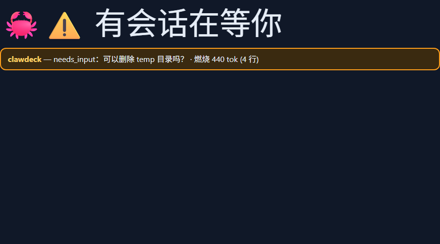

Q3
hooks：数据是怎么"推"进来的？command 型和 http 型有何区别？
SideCrab 在 ~/.claude/settings.json 里注册了 10 个 hook 事件：SessionStart、UserPromptSubmit、Notification、Stop、StopFailure、SubagentStart/Stop、PermissionRequest、SessionEnd、PreCompact。其中 9 个是 "type":"http"——由 Claude Code 本体直接发 HTTP POST，不落 shell、不起子进程（旧版曾用 curl.exe 外壳命令，v0.34 起废除）；SessionStart 是例外（CLI 在该事件不跑 http hook），保留 command 型 curl 条目。
最关键的设计是 fail-open（失败放行）：hook 超时/拒连/非 2xx 时，Claude Code 得到空决策、照常继续。crabd 挂掉的唯一后果是面板上出现一只担心的螃蟹——你的会话永远不会被仪表盘拖死。PermissionRequest 是唯一长超时（60s），因为它承担"面板批准"的长轮询。实验中我们实证了这一点：crabd 未运行时上游 statusline 脚本静默降级、退出码 0。
Q6
token 燃烧量怎么算？为什么复用 OAuth 令牌？
crabd 只读解析 ~/.claude 里的会话 JSONL 转录（关联 [[JSONL事件日志与折叠模型]]），把每条 assistant 消息的 usage.output_tokens 累加成"今日燃烧"，配可选的每日预算告警。限额表读的则是 Claude Code 本机那把 OAuth 令牌——同一把钥匙、同一次调用，不新增任何授权面。坑在于该令牌约 6 小时过期、只在终端 claude 会话发 API 调用时刷新：纯桌面 App 用户第二天表就会全黑。官方解法是 claude setup-token 换长期令牌、DPAPI 加密存放，仅在 CLI 令牌失效时启用，永不日志、永不下发。
Q7
面板上点"批准"真的能放行权限请求？为什么默认关闭？
能——PermissionRequest hook 长轮询 60 秒，面板点"Approve"经 crabd 把决策送回会话。但出厂审批功能是关的，且配对了 pairing code。背后是一次真实攻防（SC-01）：crabd 的来源门对"没有 Origin 头的请求"放行（原生客户端本就没有 Origin），于是本机任意进程都能 POST /v1/config 改写 continue 提示词白名单，下一次 Stop hook 就会把它作为会话的下一轮指令送进模型——这本质是知识库 [[提示注入]] 的本机变体。修复：continue 词表改回只读文件（file-only），/v1/config 拒绝三个相关键。教训：凡是"能写进模型输入的通道"，就要按最高信任级别设防，哪怕它只听 127.0.0.1。
Q8
为什么用 .NET + WebView2 宿主，而不是开一个浏览器 F11 全屏？
浏览器全屏窗口会抢焦点、有任务栏项、休眠/换屏后可能"掉"回主屏。SideCrab.Panel 是个无边框、置顶、从不夺焦、无任务栏项的 WebView2 窗口，按显示器 PnP 设备 id（CRXED00）钉死在 Xeneon Edge 上，休眠唤醒、拔插显示器后自动重新钉回。网页部分照常迭代（HTML/JS 由 crabd 提供），原生壳只负责"老老实实贴在那块屏上"。这是混合栈的典型取舍：数据面 Python（快速迭代一万行不出事）、展示壳 C#（干操作系统级的脏活）、界面本身 Web（生态最便宜）。配套工程同样值得学：升级走 dist.staging 试跑 → dist.last-good 保底 → 改名切换 → 失败自动回滚，退出码从不撒谎（关联 [[发布交换与健康门回滚]]）。
🧪 主实验：mini-crabd —— 180 行纯标准库复刻 SideCrab 软件主链路
不必买 Xeneon Edge。我们用 exercise\mini_crabd.py（标准库 http.server）复刻hooks → 状态机 → /v1/state → /panel/ 四环，真实运行于 :2799。
Step 1 · 启动伴飞服务目的：起一个只听本机回环的状态服务。操作：
cd F:\reminder\clawdeck\exercise
python mini_crabd.py 2799
# → mini-crabd listening on http://127.0.0.1:2799 (panel: /panel/)
服务启动行打印，进程驻留。
Step 2 · 模拟 Claude Code 打 hook 事件（会话 s1 开跑）目的：验证 hooks 入口与 fail-open 语义（永远 204 无正文）。操作：
curl -s -o NUL -w "%{http_code}" -X POST http://127.0.0.1:2799/v1/hook/session-start -d "{\"session_id\":\"s1\",\"cwd\":\"F:/reminder/clawdeck\"}"
curl -s -o NUL -w "%{http_code}" -X POST http://127.0.0.1:2799/v1/hook/prompt -d "{\"session_id\":\"s1\",\"transcript_path\":\"F:/reminder/clawdeck/exercise/sample_transcript.jsonl\"}"
curl -s http://127.0.0.1:2799/v1/state
两个 204；state 里 s1 = working，burn = {"jsonlEntries": 4, "outputTokens": 440}——JSONL 转录被真实解析（88+142+210）。
Step 3 · 让会话"开口问你"（中文问题）目的：验证 needs_input 与问题捕获。中文经
--data-binary @file 送 UTF-8（Git Bash 内联中文会翻车，坑见下）：
curl -s -o NUL -w "%{http_code}" -X POST http://127.0.0.1:2799/v1/hook/notification --data-binary @notif.json
# notif.json = {"session_id":"s1","message":"可以删除 temp 目录吗？"}
204；/v1/state 中 s1 = needs_input，question = "可以删除 temp 目录吗？"，顶层 mood 由 calm 翻转为 alert。
Step 4 · 全状态机过一遍（第二会话 + 失败 + 退役）目的：验证排序与老化规则。操作：
curl -s -X POST http://127.0.0.1:2799/v1/hook/session-start -d "{\"session_id\":\"s2\",\"cwd\":\"F:/reminder/vault\"}"
curl -s -X POST http://127.0.0.1:2799/v1/hook/subagent-start -d "{\"session_id\":\"s2\"}"
curl -s -X POST http://127.0.0.1:2799/v1/hook/stop-failure -d "{\"session_id\":\"s2\"}"
curl -s -X POST http://127.0.0.1:2799/v1/hook/stop -d "{\"session_id\":\"s1\"}"
curl -s http://127.0.0.1:2799/v1/state
curl -s -X POST http://127.0.0.1:2799/v1/hook/session-end -d "{\"session_id\":\"s2\"}"
s2 = failed（question="API error"，subagents=1，排序在 working/done 之前）；s1 = done；session-end 后 s2 消失（gone 即退役），totals 同步收敛。
Step 5 · 打开面板，无头浏览器自证目的：验证 /panel/ 页面轮询 /v1/state 并画出"螃蟹心情"。操作：
msedge --headless --disable-gpu --window-size=900,500 --screenshot="panel_screenshot.png" "http://127.0.0.1:2799/panel/"
真实截图 panel_screenshot.png（见下图）：🦀⚠️ "有会话在等你" + 橙色 needs_input 卡片 + 中文问题 + "燃烧 440 tok (4 行)"。

加分项 · 实证上游 fail-open直接跑仓库自带的
hooks\sidecrab_statusline.py，stdin 喂假 statusline 文档，此时 crabd 并未运行：
echo '{"session_id":"test","model":{"id":"claude-opus-5-5","display_name":"Opus"},
"workspace":{"current_dir":"F:/reminder/clawdeck"}}' | python ..\repo\hooks\sidecrab_statusline.py
# → 🦀 sidecrab · Opus · clawdeck 退出码 0
无崩溃、无堆栈，静默降级为最小状态行——"仪表盘失联不连累会话"由假设变成实测。
踩坑记录：① Git Bash 命令行内联中文 JSON 会以错误编码发出（curl 报 000），改用 --data-binary @utf8.json 稳妥；② 上游 crabd 声明 Python 3.13，本机 3.14 亦可运行实验件（mini-crabd 仅用标准库，无关版本差异）。